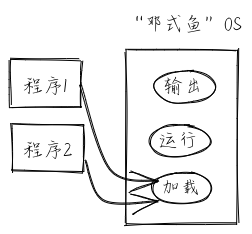

引言¶
本章导读¶
本章展现了操作系统一系列功能：
通过批处理支持多个程序的自动加载和运行
操作系统利用硬件特权级机制，实现对操作系统自身的保护
上一章，我们在 RV64 裸机平台上成功运行起来了 Hello, world! 。看起来这个过程非常顺利，只需要一条命令就能全部完成。但实际上，在那个计算机刚刚诞生的年代，很多事情并不像我们想象的那么简单。 当时，程序被记录在打孔的卡片上，使用汇编语言甚至机器语言来编写。而稀缺且昂贵的计算机由专业的管理员负责操作，就和我们在上一章所做的事情一样，他们手动将卡片输入计算机，等待程序运行结束或者终止程序的运行。最后，他们从计算机的输出端——也就是打印机中取出程序的输出并交给正在休息室等待的程序提交者。
实际上，这样做是一种对于珍贵的计算资源的浪费。因为当时的计算机和今天的个人计算机不同，它的体积极其庞大，能够占满一整个空调房间，像巨大的史前生物。管理员在房间的各个地方跑来跑去、或是等待打印机的输出的这些时间段，计算机都并没有在工作。于是，人们希望计算机能够不间断的工作且专注于计算任务本身。
批处理系统 (Batch System) 应运而生。它的核心思想是：将多个程序打包到一起输入计算机。而当一个程序运行结束后，计算机会 自动 加载下一个程序到内存并开始执行。这便是最早的真正意义上的操作系统。
程序总是难免出现错误。但人们希望一个程序的错误不要影响到操作系统本身，它只需要终止出错的程序，转而运行执行序列中的下一个程序即可。如果后面的程序都无法运行就太糟糕了。这种 保护 操作系统不受有意或无意出错的程序破坏的机制被称为 特权级 (Privilege) 机制，它实现了用户态和内核态的隔离，需要软件和硬件的共同努力。
本章主要是设计和实现建立支持批处理系统的泥盆纪“邓式鱼”操作系统，从而对可支持运行一批应用程序的执行环境有一个全面和深入的理解。
本章我们的目标让泥盆纪“邓式鱼”操作系统能够感知多个应用程序的存在，并一个接一个地运行这些应用程序，当一个应用程序执行完毕后，会启动下一个应用程序，直到所有的应用程序都执行完毕。
实践体验¶
本章我们的批处理系统将连续运行三个应用程序，放在 user/src/bin 目录下。
获取本章代码：
$ git clone https://github.com/rcore-os/rCore-Tutorial-v3.git
$ cd rCore-Tutorial-v3
$ git checkout ch2
在 qemu 模拟器上运行本章代码：
$ cd os
$ make run
将 Maix 系列开发板连接到 PC，并在上面运行本章代码：
$ cd os
$ make run BOARD=k210
如果顺利的话，我们可以看到批处理系统自动加载并运行所有的程序并且正确在程序出错的情况下保护了自身：
[rustsbi] RustSBI version 0.1.1
.______ __ __ _______.___________. _______..______ __
| _ \ | | | | / | | / || _ \ | |
| |_) | | | | | | (----`---| |----`| (----`| |_) || |
| / | | | | \ \ | | \ \ | _ < | |
| |\ \----.| `--' |.----) | | | .----) | | |_) || |
| _| `._____| \______/ |_______/ |__| |_______/ |______/ |__|
[rustsbi] Platform: QEMU (Version 0.1.0)
[rustsbi] misa: RV64ACDFIMSU
[rustsbi] mideleg: 0x222
[rustsbi] medeleg: 0xb1ab
[rustsbi-dtb] Hart count: cluster0 with 1 cores
[rustsbi] Kernel entry: 0x80200000
[kernel] Hello, world!
[kernel] num_app = 3
[kernel] app_0 [0x8020b028, 0x8020c048)
[kernel] app_1 [0x8020c048, 0x8020d100)
[kernel] app_2 [0x8020d100, 0x8020e4b8)
[kernel] Loading app_0
Hello, world!
[kernel] Application exited with code 0
[kernel] Loading app_1
Into Test store_fault, we will insert an invalid store operation...
Kernel should kill this application!
[kernel] PageFault in application, core dumped.
[kernel] Loading app_2
3^10000=5079
3^20000=8202
3^30000=8824
3^40000=5750
3^50000=3824
3^60000=8516
3^70000=2510
3^80000=9379
3^90000=2621
3^100000=2749
Test power OK!
[kernel] Application exited with code 0
[kernel] Panicked at src/batch.rs:61 All applications completed!
本章代码树¶
├── bootloader
│ ├── rustsbi-k210.bin
│ └── rustsbi-qemu.bin
├── LICENSE
├── os
│ ├── build.rs(新增：生成 link_app.S 将应用作为一个数据段链接到内核)
│ ├── Cargo.toml
│ ├── Makefile(修改：构建内核之前先构建应用)
│ └── src
│ ├── batch.rs(新增：实现了一个简单的批处理系统)
│ ├── console.rs
│ ├── entry.asm
│ ├── lang_items.rs
│ ├── link_app.S(构建产物，由 os/build.rs 输出)
│ ├── linker-k210.ld
│ ├── linker-qemu.ld
│ ├── main.rs(修改：主函数中需要初始化 Trap 处理并加载和执行应用)
│ ├── sbi.rs
│ ├── syscall(新增：系统调用子模块 syscall)
│ │ ├── fs.rs(包含文件 I/O 相关的 syscall)
│ │ ├── mod.rs(提供 syscall 方法根据 syscall ID 进行分发处理)
│ │ └── process.rs(包含任务处理相关的 syscall)
│ └── trap(新增：Trap 相关子模块 trap)
│ ├── context.rs(包含 Trap 上下文 TrapContext)
│ ├── mod.rs(包含 Trap 处理入口 trap_handler)
│ └── trap.S(包含 Trap 上下文保存与恢复的汇编代码)
├── README.md
├── rust-toolchain
├── tools
│ ├── kflash.py
│ ├── LICENSE
│ ├── package.json
│ ├── README.rst
│ └── setup.py
└── user(新增：应用测例保存在 user 目录下)
├── Cargo.toml
├── Makefile
└── src
├── bin(基于用户库 user_lib 开发的应用，每个应用放在一个源文件中)
│ ├── 00hello_world.rs
│ ├── 01store_fault.rs
│ └── 02power.rs
├── console.rs
├── lang_items.rs
├── lib.rs(用户库 user_lib)
├── linker.ld(应用的链接脚本)
└── syscall.rs(包含 syscall 方法生成实际用于系统调用的汇编指令，
各个具体的 syscall 都是通过 syscall 来实现的)